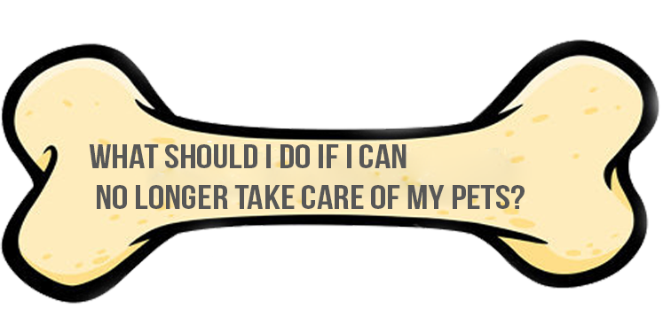
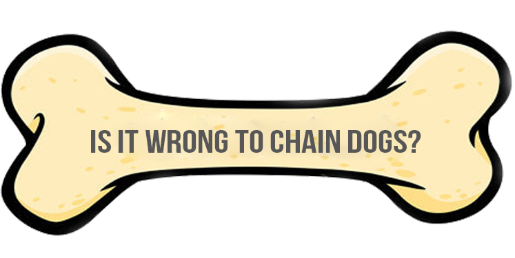
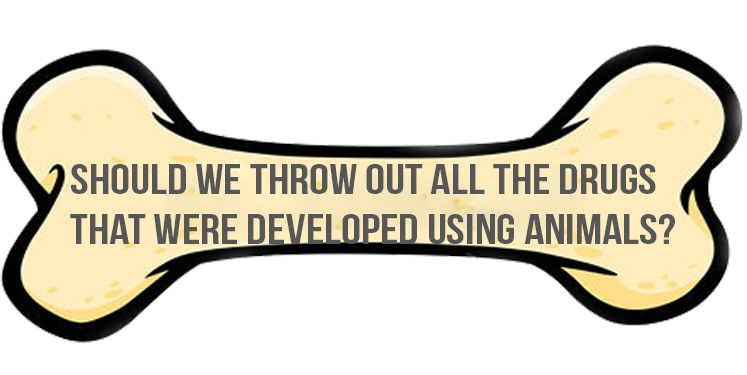

Giving away a companion animal is certainly traumatic for your animal. If you really cannot keep your pet and you have exhausted resources such as relatives and friends, you can always give them to humane organizations that would take care of your pets.

Chaining dogs is like solitary confinement
on a chain. Dogs don't deserve this kind of treatment, being heated by the sun, exposing them to rain and weather conditions. Perhaps, worst of all, they will be terrified and lonely. No wonder that some cities treat this as an illegal action.

Sadly, this is the true side of society, which many things were developed through others' exploitation. We can't change the past; the animals who suffered and died are lost. But we still can change the future by using non-animal experimentations from now on.